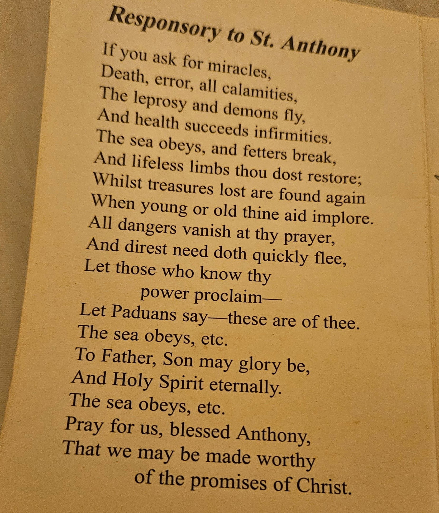
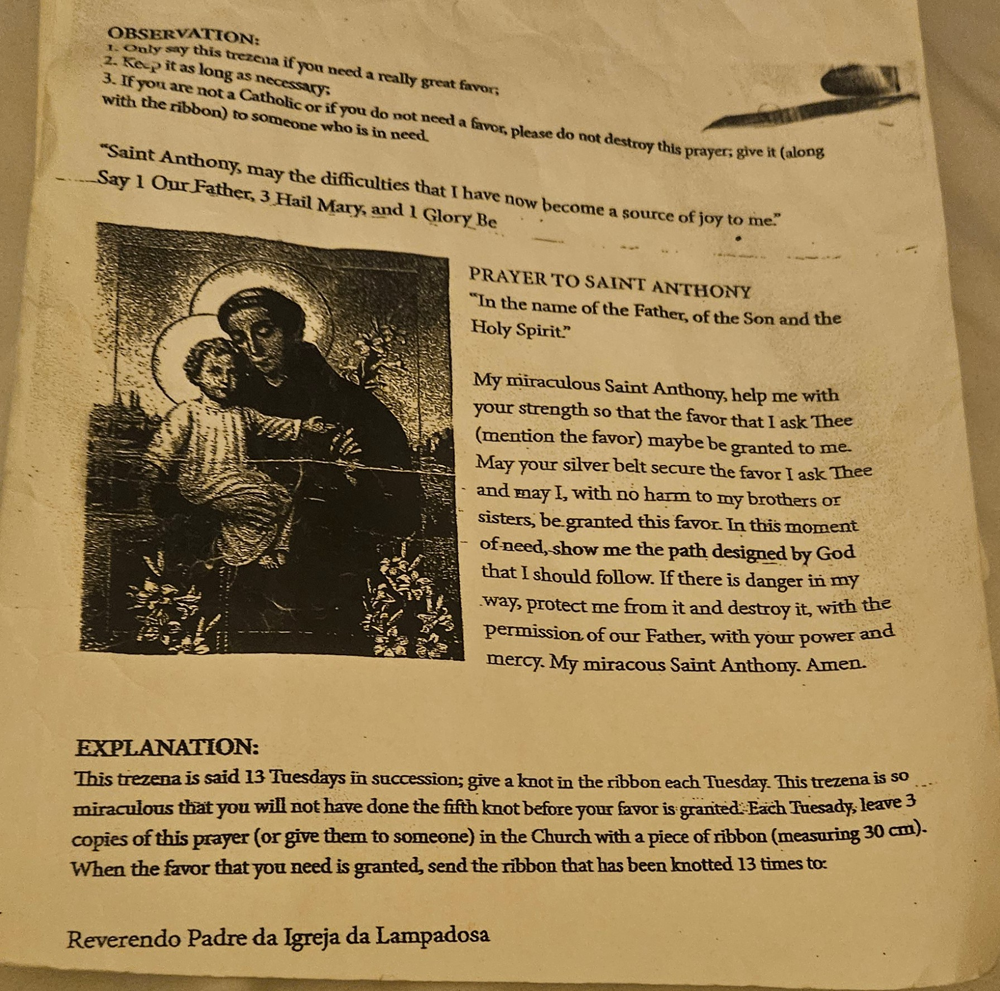

In the name of the Father, and of the Son, and of the Holy Spirit. Amen.
2. The Apostles' Creed
I believe in God, the Father Almighty, Creator of heaven and earth; and in Jesus Christ, His only Son, our Lord; Who was conceived by the Holy Spirit, born of the Virgin Mary, suffered under Pontius Pilate, was crucified, died, and was buried. He descended into hell; the third day He arose again from the dead; He ascended into heaven, and sits at the right hand of God, the Father Almighty; from thence He shall come to judge the living and the dead. I believe in the Holy Spirit, the holy Catholic Church, the communion of saints, the forgiveness of sins, the resurrection of the body, and life everlasting. Amen.
3. The Our Father
Our Father, Who art in heaven, hallowed be Thy name; Thy kingdom come; Thy will be done on earth as it is in heaven. Give us this day our daily bread; and forgive us our trespasses as we forgive those who trespass against us; and lead us not into temptation, but deliver us from evil. Amen.
4. Three Hail Marys (for Faith, Hope, and Charity)
Hail Mary, full of grace, the Lord is with thee; blessed art thou among women, and blessed is the fruit of thy womb, Jesus. Holy Mary, Mother of God, pray for us sinners, now and at the hour of our death. Amen.
Hail Mary, full of grace... (Hope)
Hail Mary, full of grace... (Charity)
5. The Glory Be
Glory be to the Father, and to the Son, and to the Holy Spirit. As it was in the beginning, is now, and ever shall be, world without end. Amen.
(Optional) Fatima Prayer
O my Jesus, forgive us our sins, save us from the fires of hell, lead all souls to Heaven, especially those in most need of Thy mercy.
The Joyful Mysteries
1. The Annunciation
The Archangel Gabriel announces to Mary that she shall conceive a child by the power of the Holy Spirit. (Luke 1:26-38)
Our Father...
10 Hail Marys:
Glory Be...
(Optional) Fatima Prayer: O my Jesus...
2. The Visitation
Mary visits her cousin Elizabeth, who is pregnant with John the Baptist. (Luke 1:39-56)
Our Father...
10 Hail Marys:
Glory Be...
(Optional) Fatima Prayer: O my Jesus...
3. The Nativity
Jesus is born in Bethlehem. (Luke 2:1-20)
Our Father...
10 Hail Marys:
Glory Be...
(Optional) Fatima Prayer: O my Jesus...
4. The Presentation
Mary and Joseph present Jesus in the Temple. (Luke 2:22-38)
Our Father...
10 Hail Marys:
Glory Be...
(Optional) Fatima Prayer: O my Jesus...
5. The Finding in the Temple
Jesus is found in the Temple, teaching the elders. (Luke 2:41-52)
Our Father...
10 Hail Marys:
Glory Be...
(Optional) Fatima Prayer: O my Jesus...
The Luminous Mysteries
1. The Baptism of Jesus in the Jordan
God proclaims Jesus is His beloved Son. (Matthew 3:13-17)
Our Father...
10 Hail Marys:
Glory Be...
(Optional) Fatima Prayer: O my Jesus...
2. The Wedding at Cana
Jesus performs His first miracle, turning water into wine, at Mary's request. (John 2:1-11)
Our Father...
10 Hail Marys:
Glory Be...
(Optional) Fatima Prayer: O my Jesus...
3. The Proclamation of the Kingdom of God
Jesus calls all to conversion and service to the Kingdom. (Mark 1:14-15)
Our Father...
10 Hail Marys:
Glory Be...
(Optional) Fatima Prayer: O my Jesus...
4. The Transfiguration
Jesus is transfigured on the mountain, revealing His glory. (Matthew 17:1-8)
Our Father...
10 Hail Marys:
Glory Be...
(Optional) Fatima Prayer: O my Jesus...
5. The Institution of the Eucharist
Jesus offers His Body and Blood at the Last Supper. (Matthew 26:26-30)
Our Father...
10 Hail Marys:
Glory Be...
(Optional) Fatima Prayer: O my Jesus...
The Sorrowful Mysteries
1. The Agony in the Garden
Jesus prays in the Garden of Gethsemane on the night before He dies. (Matthew 26:36-46)
Our Father...
10 Hail Marys:
Glory Be...
(Optional) Fatima Prayer: O my Jesus...
2. The Scourging at the Pillar
Jesus is cruelly scourged by Roman soldiers. (Matthew 27:26)
Our Father...
10 Hail Marys:
Glory Be...
(Optional) Fatima Prayer: O my Jesus...
3. The Crowning with Thorns
Soldiers mock Jesus and place a painful crown of thorns on His head. (Matthew 27:27-31)
Our Father...
10 Hail Marys:
Glory Be...
(Optional) Fatima Prayer: O my Jesus...
4. The Carrying of the Cross
Jesus carries the heavy cross to Calvary. (John 19:17)
Our Father...
10 Hail Marys:
Glory Be...
(Optional) Fatima Prayer: O my Jesus...
5. The Crucifixion and Death of Our Lord
Jesus is nailed to the cross and dies for our sins. (John 19:18-30)
Our Father...
10 Hail Marys:
Glory Be...
(Optional) Fatima Prayer: O my Jesus...
The Glorious Mysteries
1. The Resurrection
Jesus rises from the dead. (John 20:1-29)
Our Father...
10 Hail Marys:
Glory Be...
(Optional) Fatima Prayer: O my Jesus...
2. The Ascension
Jesus ascends into Heaven. (Luke 24:50-53)
Our Father...
10 Hail Marys:
Glory Be...
(Optional) Fatima Prayer: O my Jesus...
3. The Descent of the Holy Spirit
The Holy Spirit comes upon the Apostles and Mary. (Acts 2:1-41)
Our Father...
10 Hail Marys:
Glory Be...
(Optional) Fatima Prayer: O my Jesus...
4. The Assumption of Mary
Mary is taken body and soul into Heaven.
Our Father...
10 Hail Marys:
Glory Be...
(Optional) Fatima Prayer: O my Jesus...
5. The Coronation of Mary
Mary is crowned Queen of Heaven and Earth.
Our Father...
10 Hail Marys:
Glory Be...
(Optional) Fatima Prayer: O my Jesus...
St. Anthony - Saint of Miracles
Prayer to St. Anthony, Saint of Miracles
Extracted Text:
St. Anthony - Saint of Miracles
O Holy St. Anthony, gentlest of Saints, your love for God and charity for His creatures, made you worthy, when on earth, to possess miraculous powers. Miracles waited on your words, which you were ever ready to speak for those in trouble or anxiety. Encouraged by this thought, I implore you to obtain for me (request). The answer to my prayer may require a miracle. Even so, you are the Saint of Miracles. O gentle and loving St. Anthony, whose heart was ever full of human sympathy, whisper my petition into the ears of the Sweet Infant Jesus, who loved to be folded in your arms, and the gratitude of my heart will ever be yours. Amen. Our Father, Hail Mary, Glory be.
Pray for Us ST. ANTHONY
Insights and Background:
St. Anthony of Padua (born Fernando Martins de Bulhões in Lisbon, 1195 – 1231) was a Portuguese Catholic priest and friar of the Franciscan Order. He was known for his powerful preaching, expert knowledge of scripture, and an undying love and devotion to the poor and the sick. He is widely revered as the "Saint of Miracles" due to the many miracles attributed to his intercession both during his lifetime and after his death.
This prayer specifically calls upon St. Anthony's reputation as a miracle worker. It highlights his gentleness, love for God, and charity as the foundations of his miraculous powers. The petitioner approaches St. Anthony with confidence, asking for intercession for a specific need, acknowledging that the request might be so great as to require a miracle. The prayer also tenderly refers to St. Anthony's close relationship with the Child Jesus, often depicted in art holding the infant. Invoking St. Anthony in times of trouble or anxiety is a common practice, reflecting trust in his compassionate intercession. He is also famously known as the patron saint for the recovery of lost items.
Responsory to St. Anthony
The Responsory (Si Quaeris Miracula)

Extracted Text:
Responsory to St. Anthony
If you ask for miracles,
Death, error, all calamities,
The leprosy and demons fly,
And health succeeds infirmities.
The sea obeys, and fetters break,
And lifeless limbs thou dost restore;
Whilst treasures lost are found again
When young or old thine aid implore.
All dangers vanish at thy prayer,
And direst need doth quickly flee,
Let those who know thy
power proclaim—
Let Paduans say—these are of thee.
The sea obeys, etc.
To Father, Son may glory be,
And Holy Spirit eternally.
The sea obeys, etc.
Pray for us, blessed Anthony,
That we may be made worthy
of the promises of Christ.
Insights and Background:
The Responsory to St. Anthony, also known by its Latin incipit "Si Quaeris Miracula" ("If you seek miracles"), is one of the most famous and beloved prayers associated with St. Anthony of Padua. It is traditionally attributed to St. Bonaventure, a contemporary and fellow Franciscan, although some sources suggest it was composed by Friar Julian of Spires shortly after St. Anthony's canonization in 1232.
This hymn is a powerful litany of the types of miracles and graces obtained through St. Anthony's intercession. It catalogues his power over death, error, calamities, disease ("leprosy and demons fly, And health succeeds infirmities"), natural forces ("The sea obeys"), physical restraints ("fetters break"), and the restoration of lost things ("treasures lost are found again"). The prayer serves as both a testament to St. Anthony's recognized sanctity and a plea for his continued aid. The refrain "Let Paduans say—these are of thee" refers to the city of Padua, Italy, where St. Anthony spent his last years and where his basilica now stands, a major pilgrimage site. The Responsory is often prayed by those seeking lost articles or in any urgent need, reflecting a deep-seated trust in St. Anthony's powerful intercession.
Trezena to St. Anthony
Prayer for the Trezena (13 Tuesdays)

Extracted Text:
OBSERVATION:
1. Only say this trezena if you need a really great favor;
2. Keep it as long as necessary:
3. If you are not a Catholic or if you do not need a favor, please do not destroy this prayer, give it (along with the ribbon) to someone who is in need.
"Saint Anthony, may the difficulties that I have now become a source of joy to me"
Say 1 Our Father, 3 Hail Mary, and 1 Glory Be
PRAYER TO SAINT ANTHONY
"In the name of the Father, of the Son and the Holy Spirit"
My miraculous Saint Anthony, help me with your strength so that the favor that I ask Thee (mention the favor) maybe be granted to me. May your silver belt secure the favor I ask Thee and may I, with no harm to my brothers or sisters, be granted this favor. In this moment of-need, show me the path designed by God that I should follow. If there is danger in my way, protect me from it and destroy it, with the permission of our Father, with your power and mercy. My miraculous Saint Anthony. Amen.
EXPLANATION:
This trezena is said 13 Tuesdays in succession; give a knot in the ribbon each Tuesday. This trezena is so miraculous that you will not have done the fifth knot before your favor is granted. Each Tuesday, leave 3 copies of this prayer (or give them to someone) in the Church with a piece of ribbon (measuring 30 cm).
When the favor that you need is granted, send the ribbon that has been knotted 13 times to:
Reverendo Padre da Igreja da Lampadosa
Insights and Background:
The "Trezena" to St. Anthony refers to a devotion practiced over thirteen consecutive Tuesdays in honor of the saint. The number thirteen is significant as St. Anthony's feast day is June 13th. The tradition of dedicating Tuesdays to St. Anthony is said to have originated from the day of his funeral, Tuesday, June 17, 1231, when numerous miracles were reported.
This particular prayer and its accompanying instructions describe a specific form of the Trezena, emphasizing its power for obtaining "really great favors." The practice involves specific actions like tying knots in a ribbon each Tuesday, distributing copies of the prayer, and sending the knotted ribbon to a particular church (Igreja da Lampadosa, likely a church with a strong devotion to St. Anthony, possibly in a Portuguese-speaking region given the name "Reverendo Padre"). The reference to a "silver belt" ("May your silver belt secure the favor") might be symbolic or allude to a specific tradition or image of St. Anthony.
Such devotional practices, often involving specific rituals and promises, are common in popular piety and reflect a deep faith in the intercession of saints for particular needs. This Trezena combines personal prayer with acts of charity (giving copies to others) and a tangible representation of the prayer's progress (the knotted ribbon). It underscores a belief in St. Anthony's direct and powerful intervention in the lives of the faithful.
Concluding Rosary Prayers
1. Hail Holy Queen (Salve Regina)
Hail, Holy Queen, Mother of Mercy, our life, our sweetness and our hope! To thee do we cry, poor banished children of Eve; to thee do we send up our sighs, mourning and weeping in this valley of tears. Turn then, most gracious advocate, thine eyes of mercy toward us, and after this our exile, show unto us the blessed fruit of thy womb, Jesus. O clement, O loving, O sweet Virgin Mary! V. Pray for us, O Holy Mother of God. R. That we may be made worthy of the promises of Christ.
2. Let Us Pray (The Rosary Prayer)
O God, whose only-begotten Son, by His life, death, and resurrection, has purchased for us the rewards of eternal life; grant, we beseech Thee, that meditating upon these mysteries of the Most Holy Rosary of the Blessed Virgin Mary, we may imitate what they contain and obtain what they promise, through the same Christ Our Lord. Amen.
(Optional) For the intentions of the Holy Father:
Pray one Our Father, one Hail Mary, and one Glory Be.
Our Father...
Hail Mary...
Glory Be...
(Optional) St. Michael Prayer
Saint Michael the Archangel, defend us in battle. Be our protection against the wickedness and snares of the devil. May God rebuke him, we humbly pray; and do thou, O Prince of the Heavenly Host, by the power of God, cast into hell Satan and all the evil spirits who prowl about the world seeking the ruin of souls. Amen.
3. The Sign of the Cross
In the name of the Father, and of the Son, and of the Holy Spirit. Amen.